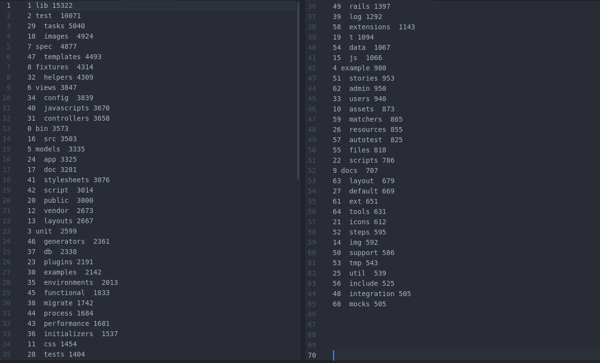

What could be used furthermore?¶
Length of arrays¶
Because of text mining alone not working properly, we wanted to filter some values which can be converted much easier into numerical representations. While searching for such values, the length of some array-based values seemed to be useful in order to analyze the repository. In our repository data the commits, comments, files/folders and issues consist of arrays, which length we can extract and easily convert to the needed input vector for the learning network. We only had to normalize (number between 0 and 1) them by the length dividing the maximum length(which is 1000 per array, larger arrays would be truncated).
Directory names¶
In addition to using file extensions, we tried to extract directory names as well. We were not sure, whether these would help us, so we decided to print a list of all directory names, which were not only used rarely.
The list contains all values in the format “InternalID[TAB]value[TAB]frequency” and is sorted by frequency.
Seeing the result, we decided to not use this names, because most of the common ones are used in programming and development. There wasnt a wide range of names over our categories, so they wouldnt help much in classifying.
Additionaly values from GitHub¶
Maybe the data we got from GitHub was not enough? Would it be better to know more about the repositories? We think, that this was not our main problem. Yes, more data nearly always is better for analyzing, but the existing values should be enough for classification.
Conclusion¶
With this approach we increased our accuracy up to 30%, which is 150% of the text-mining accuracy. Increasing the accuracy any further won’t be possible without using much more computing power. With enough performance you can store and analyze the textual values better, which should be the main part in this analyzation. Only storing single words isn’t enough, you will have to analyze the context too. Companies, who are working on Text Mining, surely have algorithms, which will work perfectly on this szenario. However, we tried a few different approaches and didnt concentrate on Text Mining, while Text Mining being the key for classification. Having some side values(here the length of arrays)is being helpful too, but they cannot classify repositories with enough precision.